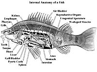

|

|

|
|
External Anatomy of a Fish
The bony fish is a vertebrate, with
systems of organs similar to those of other vertebrates. The bony
skeleton helps to support the animal, protect the delicate organs
underneath and provide a place of attachment for the muscles.
|
Internal Anatomy of a Fish

So, what is inside the fish that you just caught? You may have filleted a fish, removing most of the skeleton and the 'guts'. These guts were once some of the organs necessary to maintain life in the fish. Since the perch
is often used to describe the typical internal anatomy of a fish,
let's assume the fish on the end of your line is one of this species.
|
Systems in a Fish
Digestive
Respiratory
Circulatory
Excretory
Reproductive
Nervous
Regulatory
|
If you were to open the mouth of
your catch, you would find a mouth cavity with a number of small,
pin-like teeth used for holding food. Moving through the mouth,
you would see a small tongue, located on the floor of the mouth,
which leads to a short pharynx (throat) where the gills are located
and then the esophagus (food tube) which leads to the stomach.
At the end of the stomach, a valve regulates the passage of food
into a coiled intestine which opens to the exterior through the
anus. Some fish that must 'chew' their food have 'teeth' located
in the pharynx. These 'teeth' serve to mash the food so there
is no danger of food bits being washed into the gills. Carnivorous
(meat eating) fish have shorter intestines than 'vegetarian' fish.
Extra room is required to digest the fibre found in plant matter.
Attached at the upper end of the intestine, close to the stomach,
are finger-like projections called pyloric caeca. These
aid in the absorption of food in the intestine and serve as a
temporary storage space. Since they are definite in number for
each species, they are sometimes used to determine the fish species.
The liver is located in front of
the stomach and connected to the liver is a gall bladder. Both
function in the digestion of food by secreting necessary digestive
enzymes. The liver also functions as a storage area for fat and
vitamins. Lying in the curvature between the stomach and the
intestine is the spleen, which helps to removes waste products
from the blood. |
|
Imagine the fish on your line struggling
to breathe; the gill covering or operculum is moving in and
out as the fish tries to move water through its mouth and out
its gills. The gills lie on either side of the pharynx and are
thin-walled filaments which contain many tiny blood vessels.
As the water moves over the filaments in the opposite direction
of the blood flow, oxygen moves in and carbon dioxide moves out.
Fish have many gill filaments that look like 'feathery' structures
which can be seen when the operculum is pulled back, exposing
the branchial chamber.
|
|
The respiratory system works in conjunction
with the circulatory system. Blood is enclosed in vessels throughout
the body and carries oxygen to the body tissues. The fish has
a two-chambered heart consisting of one auricle and one ventricle
and is located beneath the pharynx. The heart pumps the blood
to the gills, where carbon dioxide from the tissues is diffused
outward and oxygen is taken in. The blood then travels to the
body tissues where oxygen is taken in by the cells and used in
several chemical reactions. The blood is under low pressure since
the it travels through a single circuit, and not a double circuit
as found in reptiles, birds and mammals.
|
|
Fish remove wastes from their body
via the kidneys which are located above the stomach, just beneath
the backbone. The bladder, connected to the kidneys, excretes liquid wastes through the opening (urogenital aperture) located behind the anus. Solid wastes leave the body through the anus.
|
|
Reproductive organs can sometimes
be seen, especially if the fish you caught is female and the ovaries are filled with eggs (roe). The reproductive organs (gonads) are paired and are greatly enlarged during mating season. Ripe eggs pass out of the ovaries into the general body cavity and can completely fill the space. The eggs leave the body through the urogenital opening. Female fishes lay hundreds, or even millions, of eggs. The male releases milt containing sperm, over the eggs. This method of external fertilization is not 100% efficient and most of the fertilized eggs are eaten or die before they hatch. Only a few eggs hatch to become adults. Generally, parents do not care for their young. Many newly hatched fish continue to
be nourished by a ventral yolk sac, present from the egg stage. This is soon absorbed and the fish resembles a tiny adult (fry stage).
|
|
Fish have a nervous system composed
of a brain with small olfactory lobes, a cerebrum, large optic
lobes and a cerebellum. Also present are ten pairs of cranial
nerves. The bony fish have well-developed sense organs that are
adapted to different lifestyles.
The most prominent sensory organ is the eye. Fish do not have eyelids but have a well-developed eye, some fish relying on sight to catch their prey. In the murky waters of Saskatchewan, other senses play an important roll. Smell is the other important sense and most fish have two pairs of nostrils as well as chemical receptors scattered over their head and body. Food, mates and enemies can be identified by the olfactory (scent) sense. Fish
can detect weak currents. This ability helps them to locate prey and avoid predators. The lateral line system, mentioned previously, detects changes in pressure and vibrations in the water. The sense of hearing is well developed in fish and the swim bladder is connected to the inner ear. Tiny stones in the inner ear transfer vibrations to sensory cells.
If you wondering if fish can be 'trained', check out fish in any aquarium. Some species respond to the 'hand that feeds them'. Such a conditioned response is a learned behavior.
|
|
Fish do not produce much body heat.
The body temperature is mainly regulated by their external environment,
a characteristic called ectothermy. Generally, ectothermy does
not cause problems for fishes because water temperatures remain
fairly constant. Fish that live in the very cold water of northern
Saskatchewan have the ability to increase their body temperature
by constantly moving their muscles. This movement produces heat
as a by-product of cell metabolism.
|
|
|